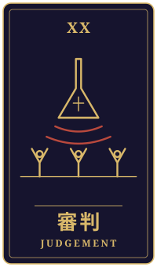

耳標
物語の手前に、ひとつの相談がありました。三枚のタロットをめぐるやりとりを、聞こえたままに書き留めています。
持ち込まれた相談
十勝で牛を診る獣医をして五年になります。昨日、札幌で小動物病院の面接を受けた帰り、高速の事故で四時間、雪の中で車ごと動けなくなりました。その間に、ずっと通っている牧場から難産の電話が来て、行けないと伝えたら同僚が代わってくれました。子牛は無事だったそうです。よかったと思うより先に、ほっとしてしまった自分がいました。牛が好きでこの仕事を選んだはずなのに、夜中の呼び出しや冬の道がもう怖いのかもしれません。札幌の病院は返事を待ってくれています。ここを離れるのは逃げなのか、それとも正直になることなのか、自分ではもうわかりません。
タロットの読み解き

過去
星・正位置
星のカードは、暗い夜空でひとつ、静かに光を灯す札です。希望や願い、ひらめきを表すとされていますね。牛を診る道を選んだ五年前の、あの最初の願いが、今のあなたの歩みを照らしてきたのかもしれません。

現在
世界・正位置
世界のカードは、ひとつの循環が満ちて、整っていく時を示します。五年という時間は、あなたなりに一つの形をつくってきた期間だと見ることもできますね。そして、ほっとした自分に気づいたことも、その形の中で見えてきた正直な心の声なのでしょう。

未来
審判・逆位置
審判のカードが逆位置で出ています。この向きは、決断をためらう心や、自分を責める気持ちを映すとされています。昨日の雪の中の四時間で、あなたは自分を責めすぎてしまったのかもしれません。ただ、逆位置は、今まで聞こえなかった声に耳を澄ませる合図とも読めます。
最後に
ここを離れることは、必ずしも逃げとは限りません。牛を好きだった気持ちと、冬の道や夜の呼び出しが怖いという気持ちは、どちらも本当のものでしょう。怖いと感じることを正直に認めることが、いまのあなたにできる誠実さなのかもしれません。
札幌の病院への返事は、焦らず、ご自身の体と心の声をもう一度たどってから決めてみてはどうでしょう。ただ、進退に関わる大きな決断ですので、信頼できる先輩獣医や家族にも話してみてください。カードはあくまで心を整理する鏡であり、答えはあなたの中にあると思います。
帰り際の問い自分を許すために、何が必要か。
読み解きは、タロット占い「月夜のアルカナ」が、この相談と引かれた三枚から返したものです。小説は同じ三枚を、別の角度から描いています。相談者は物語のための架空の人物です。相談文・読み解き・短編本文は、いずれも生成AIを使って制作しています。
物語に戻る